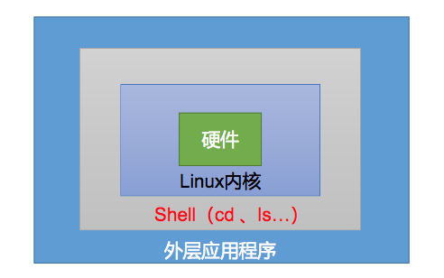

shell 概述
- Shell是一个用C语言编写的程序，它是用户使用Linux 的桥梁;
- Shell是一个命令行解释器，它接收应用程序/用户命令，然后调用操作系统内核;
- Shell还是一个功能强大的编程语言，易编写、易调试、灵活性强。

shell 解释器
linux 提供了哪些shell解释器
linux中/etc/shells文件存放了默认提供的shell解释器，执行cat /etc/shells可以查看
1 | # 执行命令 |
查看系统默认解释器
Linux中可以通过输出$SHELL系统变量获得系统默认的解释器
1 | # 执行命令 |
如何修改默认默认解释器
Linux中可以通过chsh或chpass或chfn命令修改默认的解释器，具体语法是类似的
基本语法
chpass[-s newshell] [user]chsh[-s newshell] [user]chfn[-s newshell] [user]
选项说明
| 符号 | 描述 |
|---|---|
| -s newshell | 指定具体的shell位置 |
| user | 指定用户，不指定默认当前用户 |
1 | # 执行命令 |
创建一个Shell脚本，输出helloworld
touch helloworld.sh
在文件中输入如下内容
#!/bin/bash
echo ‘hello world!’
执行脚本,使用sh或bash均可
sh ./helloworld.sh
1 |
|
创建一个Shell脚本，输出helloworld
touch batch.sh
在文件中输入如下内容
#!/bin/bash
pwd
touch batch.txt
ls -al >> batch.txt
执行脚本,使用sh或bash均可
sh ./batch.sh
1 |
|
查看当前用户的家目录
echo $HOME
结果是
/Users/yatu
显示当前shell中的所有变量
set
1 |
|
输出该脚本文件名称、输入参数1和输入参数2的值
touch parameter.sh
在文件中输入如下内容
#!/bin/bash
echo “$0 $1 $2”
执行脚本,使用sh或bash均可
sh ./parameter.sh p1 p2
输出结果是
./parameter.sh p1 p2
1 |
|
获取输入参数的个数
继续在文件parameter.sh末尾追加如下内容
echo $#
执行脚本,使用sh或bash均可
sh ./parameter.sh p1 p2
输出结果是
./parameter.sh p1 p2
2
1 |
|
获取输入参数的个数
继续在文件parameter.sh末尾追加如下内容
echo $*
执行脚本,使用sh或bash均可
sh ./parameter.sh p1 p2
输出结果是
./parameter.sh p1 p2
2
p1 p2
1 |
|
获取输入参数的个数
继续在文件parameter.sh末尾追加如下内容
echo $@
执行脚本,使用sh或bash均可
sh ./parameter.sh p1 p2
输出结果是
./parameter.sh p1 p2
2
p1 p2
p1 p2
1 |
|
继续在文件parameter.sh脚本是否正确执行
sh ./parameter.sh p1 p
echo $?
结果是
0
1 |
|
定义变量a
a=5
echo $a
结果是
5
给变量a重新赋值
a=8
echo $a
结果是
8
撤销变量a
unset a
echo $a
结果是
声明静态的变量b=2，不能unset
readonly b=2
echo $b
结果是
2
尝试修改静态变量b
b=9
结果是
-bash: b: readonly variable
在bash中，变量默认类型都是字符串类型，无法直接进行数值运算
c=1+2
echo $c
结果是
1+2
变量的值如果有空格，需要使用双引号或单引号括起来
d=hello world
结果是
-bash: world: command not found
d=”hello world”
echo $d
结果是
hello world
1 |
|
计算3+2的值
expr 2 + 3
5
计算3-2的值
expr 3 - 2
1
计算（2+3）X4的值
expr一步完成计算
expr
expr 2 + 3* 4
20
采用$[运算式]方式
r=$[(2+3)*4]
echo $r
20
2
3
4
5
6
7
8
9
10
11
12
13
14
15
16
17
18
19
20
21
22
23
24
25
26
27
28
29
30
31
32
33
34
35
36
37
38
## shell 条件判断
### 基本语法
* `[ condition ]`
> **condition前后要有`空格`;条件非空即为true，[ notempty ]返回true，[ ] 返回false**
### 常用判断条件
* 两个`整数`之间的比较
| 符号 | 描述 |
| --- | --- |
| = | 字符串比较 |
| -lt | 小于 |
| -le | 小于等于 |
| -eq | 等于 |
| -gt | 大于 |
| -ge | 大于等于 |
| -ne | 不等于 |
* 按照文件权限进行判断
| 符号 | 描述 |
| --- | --- |
| -r | 有读的权限 |
| -w | 有写的权限 |
| -x | 有执行的权限 |
* 按照文件类型进行判断
| 符号 | 描述 |
| --- | --- |
| -f | 文件存在并且是一个常规的文件 |
| -d | 文件存在并是一个目录 |
| -e | 文件存在 |
### 案例实践
50是否大于等于22
[ 50 -ge 22 ]
echo $?
结果是
0
helloworld.sh是否具有写权限
[ -w helloworld.sh ]
echo $?
结果是
0
判断/home/yatu/batch.txt目录中的文件是否存在
[ -e /home/atguigu/cls.txt ]
echo $?
结果是
1
1 |
|
if [ 条件判断式 ];then
程序
fi
或者
if [ 条件判断式 ]
then
程序
fi
1 |
|
输入一个数字，如果是1，则输出hello，如果是2，则输出world，如果是其它，什么也不输出
新建文件
touch if.sh
编辑文件，写入如下信息
#!/bin/bash
if [ $1 -eq ‘1’ ];then
echo hello
fi
if [ $1 -eq ‘2’ ]
then
echo world
fi
执行 sh ./if.sh 1
hello
1 |
|
case $变量名 in
“值1”）
如果变量的值等于值1，则执行程序1
;;
“值2”）
如果变量的值等于值2，则执行程序2
;;
…省略其他分支…
*）
如果变量的值都不是以上的值，则执行此程序
;;
esac
1 |
|
还是上面if那个例子
新建文件
touch case.sh
编辑文件，写入如下信息
#!/bin/bash
case $1 in
“1”)
echo “hello”
;;
“2”)
echo “world”
;;
esac
执行 sh ./case.sh 2
world
1 |
|
for (( 初始值;循环控制条件;变量变化 ))
do
程序
done
1 |
|
计算1到100的累计
新建文件
touch for.sh
编辑文件，写入如下信息
#!/bin/bash
sum=0
for ((i=1;i<=100;i++))
do
sum=$[$sum + $i]
done
echo $sum
执行 sh ./for.sh
结果
5050
1 |
|
while [ 条件判断式 ]
do
程序
done
1 |
|
还是for那个例子
新建文件
touch while.sh
编辑文件，写入如下信息
#!/bin/bash
sum=0
i=1
while [ $i -le 100 ]
do
sum=$[$sum + $i]
i=$[$i + 1]
done
echo $sum
执行 sh ./while.sh
结果
5050
1 |
|
截取该/home/yatu/batch.txt路径的文件名称
basename /home/yatu/batch.txt
结果是
batch.txt
basename /home/yatu/batch.txt .txt
结果是
batch
batch.txt文件的路径
dirname /home/yatu/batch.txt
/home/yatu
1 |
|
[ function ] funname[()]
{
Action;
[return int;]
}
funname
1 |
|
计算两个输入参数的和
新建文件
touch fun.sh
编辑文件，写入如下信息
#!/bin/bash
function sum()
{
s=0
s=$[$1 + $2]
echo $s
}
read -p “Please input the number1: “ n1;
read -p “Please input the number2: “ n2;
sum $n1 $n2;
执行 sh ./fun.sh
Please input the number1: 20
Please input the number2: 51
结果是
71
`